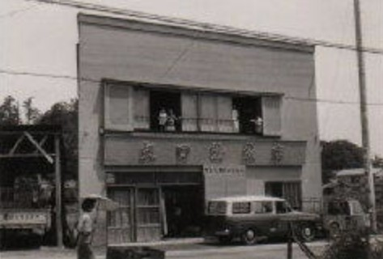
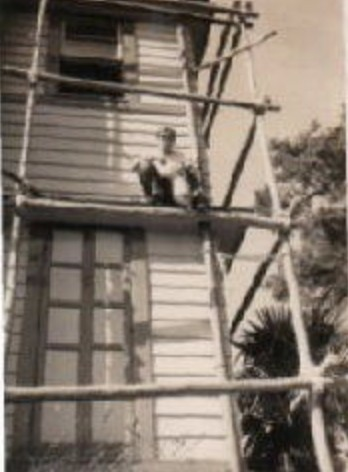
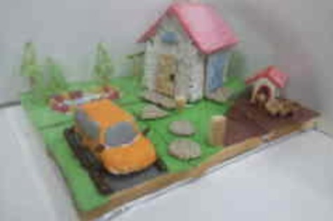
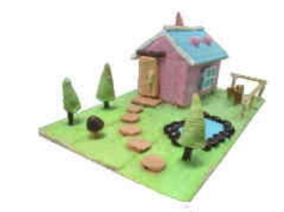
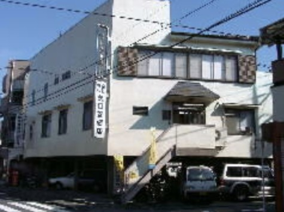
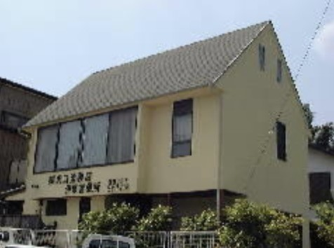

ごあいさつ
当社は、昭和35年に先代の矢口光好が東京都杉並区高円寺で個人営業として始め、昭和38年に杉並区久我山へ移転、昭和43年に「株式会社矢口塗装店」へと組織を改めました。
創業以来、地元に密着しながら、お客様のご支援のもとで業務の幅を広げてまいりました。納期厳守・信用第一と、木目細かいサービスを心がけ、今日に至っております。
塗装工事はもちろん、簡単なリフォーム工事も喜んでお請けいたします。平成13年には、塗装会社には珍しく一級建築士事務所の登録をいたしました。
これからも、さまざまなご要望に信頼と満足でお応えできるよう、社員一同精進してまいります。
株式会社 矢口塗装店
矢口塗装店の歩み
- 1960昭和35年
高円寺で創業
先代の矢口光好が、杉並区高円寺で個人営業の塗装店を始める。
- 1963昭和38年
久我山へ移転
杉並区久我山(人見街道沿い)に移り、地元に根ざした営業を広げる。
- 1968昭和43年
株式会社矢口塗装店に
社名・組織を改め、株式会社として新たなスタートを切る。
- 2001平成13年
一級建築士事務所を登録
塗装会社には珍しい一級建築士事務所として、建物全体から考える塗り替えへ。
- 現在令和
伊東出張所とともに
都内城西地区を中心に、関東一円と伊豆方面まで。戸建から学校・街路灯まで手がける。


「お菓子なまちの
ペンキ屋さん」
加盟している東京都塗装工業協同組合・日本塗装工業会東京支部とともに、「いい色塗装の日」(11月16日)の記念イベントとして、小学生と保護者の方を対象に、お菓子の家をお菓子のペンキで塗って飾る塗装教室を、渋谷の塗装会館で共催してきました。
2024年11月の第10回で幕を閉じ、2026年11月14日には新しいイベント「みんなで街のペンキ屋さん」のプレイベントが予定されています。


スタッフの試作品
会社概要


| 会社名 | 株式会社 矢口塗装店(一級建築士事務所) |
|---|---|
| 代表者 | 代表取締役 矢口 光一 |
| 創業 | 昭和35年(1960年) |
| 設立 | 昭和43年(1968年) |
| 資本金 | 2,000万円 |
| 本社 | 〒168-0082 東京都杉並区久我山3-6-8 TEL 03-3334-2535(代)／FAX 03-3334-3359 フリーダイヤル 0120-36-1116 |
| 伊東出張所 | 〒414-0037 静岡県伊東市桜が丘2-3-27 TEL 0557-36-7716 |
| 営業時間 | 8:00〜17:00(日曜定休) |
| 事業内容 | 建築塗装工事、屋根塗装、防水工事、シーリング工事、長尺シート張り工事、リフォーム工事 |
| 対応エリア | 都内城西地区を中心に関東一円、静岡県伊東市を中心とした伊豆方面 |
| 加盟団体 | 東京都塗装工業協同組合 一般社団法人 日本塗装工業会 東京支部 住宅リフォーム事業者団体(国土交通大臣登録) |
| メール | info@kk-yaguchi.co.jp |
代表者名・許可番号・資格者の人数などは、公開情報をもとに入れています。正式な内容はお打ち合わせで確認して差し替えます。
一緒に、街の住まいを
守っていく仲間を。
創業60年あまりの塗装店で、足場から仕上げまで一貫して学べます。経験者はもちろん、未経験からでも先輩職人がていねいに教えます。
塗り替えのご相談、
まずはお気軽にお電話ください。
一級建築士・施工管理技士がお住まいを拝見して、ご予算に合わせた方法をご提案します。